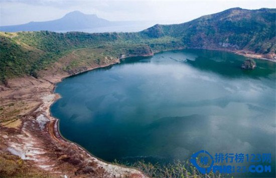
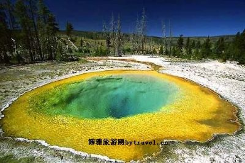

欢迎来到旅游网站
国内游
国外游
穷游
关注我们
服务
[注册]
[登录]
帮助中心
售后服务
在线服务
投诉中心
客服邮箱
亚洲
美洲
欧洲
大洋洲
印尼玛琅
爪哇岛东部
位于爪哇岛东部，离泗水约100公里。玛琅大城曾是荷兰殖民地和古马塔兰所在地......
日本那霸
冲绳县
冲绳素有日本夏威夷的美称，气候温暖宜人，沙白浪缓......
泰国卡农
国湾西岸，洛坤府北部
卡农相当低调，常常被前往苏梅岛、帕岸岛的旅客所忽略......
泰国碧差汶
曼谷出发，一路北行
田园诗般的风景让人深刻体会到返璞归真的美......

菲律宾大雁塔
甲美地省高地
鬼斧神工的大自然还赋予了大雁塔一个塔尔湖——塔尔火山口附近的火山湖......
菲律宾巴拉望
菲律宾的西南部
是一个典型的热带海岛，岛上有国家公园、天然港湾......
越南美奈
离胡志明市仅5小时车程
美奈是一个坐拥大片沙滩的宁静渔村......
韩国釜山
韩国东南海岸
釜山是韩国人口第二多的城市，同时也全国最大的港口城市......
伊瓜苏国家公园
玄武岩地带
被誉为“南美第一奇观”的伊瓜苏瀑布是南美洲最大的瀑布，也是世界五大名瀑之一......
圣克拉拉
维利亚克拉拉省的省会
那里有现代化的设施和舒适的服务，其中有温泉浴、泥潭疗养浴和按摩治疗......
德雷克海峡
南美洲最南端
德雷克海峡是沟通太平洋和大西洋的重要海上通道之一......
沃特顿冰川国际和平公园
南美洲最南端
亚伯达州的沃特顿湖区......
特里尼达
特里尼达城镇
1988年联合国教科文组织宣布古老的特里尼达为人类文化遗产......
自由女神像
美国纽约州纽约市附近的自由岛
正式名称是“照耀世界的自由女神”......
门多萨
阿根廷中西部
门多萨的冬季显得温和而湿润......

黄石国家公园
怀俄明州西北部
是美国第一个国家公园和原始公园......
伦敦塔桥
英国伦敦泰晤士
伦敦塔桥是从英国伦敦泰晤士河口算起的第一座桥......
克利姆林宫
俄罗斯
世界上最大的建筑群之一......
凯旋门
巴黎
欧洲100多座凯旋门中最大的一座......
卢浮宫
法国巴黎
卢浮宫 是世界上最古老、最大、最著名的博物馆......
埃菲尔铁塔
法国巴黎
法国巴黎的重要景点和突出标志......
大英博物馆
******
大英博物馆是世界上历史最悠久、规模最宏伟的综合性博物馆......
威尼斯水城
******
威尼斯水上城市是文艺复兴的精华......
巴黎圣母院
法国巴黎市中心
天主教巴黎总教区的主教座堂......
尼斯湖
英国苏格兰高原北部
传说这儿住着一只水怪......
帕特农神庙
希腊首都雅典卫城坐落的古城堡中心
历经两千多年的沧桑之变......
普罗旺斯
******
普罗旺斯是世界闻名的薰衣草故乡......
罗马竞技场
意大利
意大利古罗马竞技场罗马斗兽场是古罗马帝国专供奴隶主......
十二使徒岩
澳大利亚维多利亚州的大洋路边上
坎贝尔港国家公园之中，屹立在海岸旁已有二千万年历史了......
大堡瞧
南半球
世界最大最长的珊瑚礁群......
大洋路
墨尔本西部
为纪念参加第一次世界大战的士兵修建......
悉尼大学
澳洲金融之都悉尼市中心
世界顶尖历史名校......
悉尼歌剧院
悉尼市区北部
悉尼市地标建筑物......
牛奶湖
帕劳颇
牛奶湖是帕劳颇具特色的旅游胜地......
菲利普岛
澳大利亚维多利亚州南部西港海湾口
菲利普岛又称企鹅岛......
达令港
悉尼市中心的西北部
达令港又译情人港......
置顶